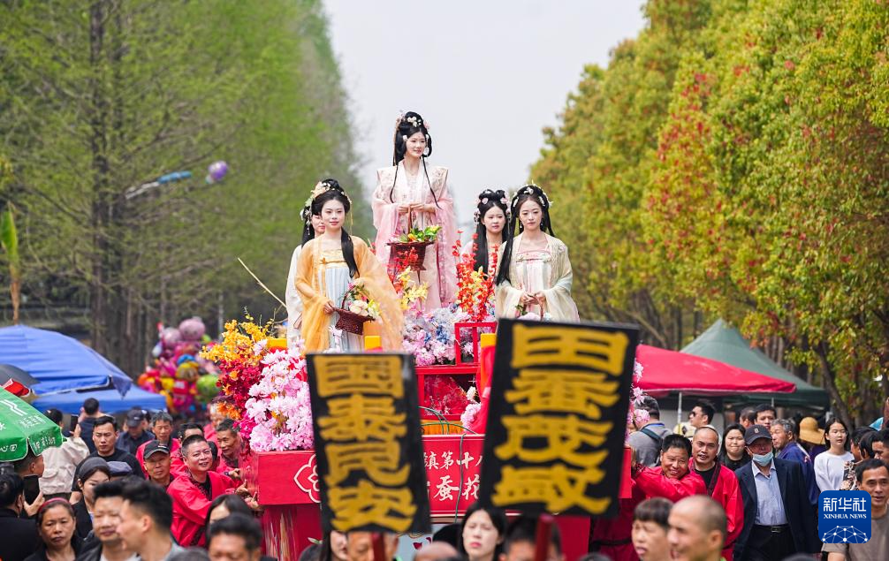

村落研究水乡空间与地方记忆适合展开传统村落、宋韵地方化和乡村影像叙事论文。
研究文章
围绕桑蚕丝织技艺与马鸣村继续深入阅读
如果你想进一步了解马鸣村背后的南宋畿辅文脉、中国传统桑蚕丝织技艺、图像传播、AI图像和蚕丝被故事，可以从这里进入相关研究文章和选题。
文章从哪些对象展开
研究文章不是脱离现场的文字，它们从村落空间、桑蚕丝织民俗和图像传播中提炼问题。

非遗研究民俗身体与节庆影像适合讨论高杆船技、蚕花水会和短视频传播中的观看关系。

数字研究AIGC与传统文化误读适合讨论AI图像生成、视觉符号和文化真实性。
可继续深化的文章方向
这里的每个方向都已经整理成一篇可阅读的专题文章。它们不是最终发表稿，而是围绕马鸣村继续深化研究、写作论文和组织展示内容的基础文本。
文章成熟度与补强方向
每篇文章已经形成完整网页正文，但进入正式论文前仍需补强不同材料。下面把它们作为研究成果库来管理，而不是只作为标题列表。
南宋畿辅视域与马鸣村活化
已有基础：项目名称、南宋畿辅框架、中国传统桑蚕丝织技艺、马鸣村空间和宋韵生活美学。
补强方向：继续补地方志、区域史和马鸣村田野材料，使“皇家桑园文化腹地”论证更稳。
符号体系与影像转译
已有基础：图像看马鸣、视觉符号页、影像档案页和已整理符号图库。
补强方向：补更多原创田野照片，并为每类符号建立来源、授权和使用边界。
文化真实性与误读机制
已有基础：AI误读案例库、AIGC真实性综述、真实图像对照和评价维度。
补强方向：生成一组可控提示词实验图，形成“提示词-结果-误读-修正”表格。
蚕丝被与乡村特色产品
已有基础：钱皇、蚕缘、洲泉蚕丝馆、凰家尚品页面和产业报道样本。
补强方向：继续补电商截图、直播话术、企业展厅图像和消费者评论样本。
影像民族志与村落记忆
已有基础：影像档案条目、访谈对象类型、照片目录和影像民族志综述。
补强方向：补正式访谈摘录、录音授权、照片编号和地点信息。
蚕花水会与高杆船技
已有基础：国家级非遗资料、含山轧蚕花、蚕花水会图片和高杆船技报道。
补强方向：补现场活动流程、传承人口述、观众观看关系和短视频样本。